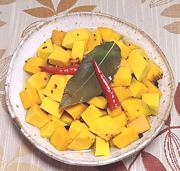

|
Winter Squash PickleNorth America | ||||
| Makes: Effort: Sched: DoAhead: |
7 cups ** 3 days Must |
This is a mild pickle that is ready in 3 days or so. The squash retains a fair amount of crispness. It is mild so should be refrigerated once cooled. Fills 2 3-1/2 cup jars. | |||
|
|
2 4 4 4 -------- 1 1 1/2 1/2 1/2 2-1/3 1 -------- |
# --- T T T T T c c --- |
Winter Squash (1) Bay Leaf Oregano sprig (2) Chili, dried -- Pickle Natural Salt (3) Sugar Salt Peppercorns Mustard Seeds Vinegar Water ---------------- |
Make - (3 Days - 45 min work)
|